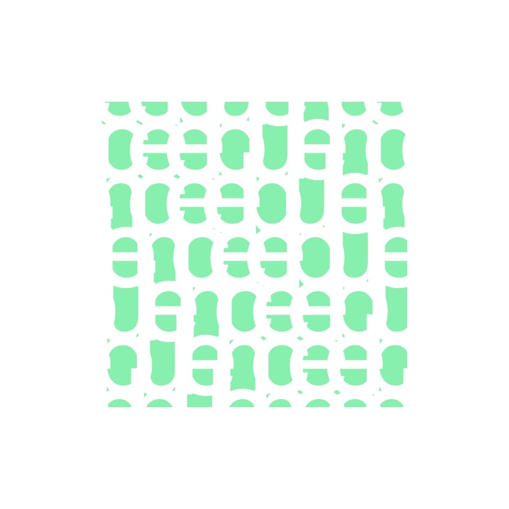

2019
10th April
Good morning! Or evening. I can't be sure. I post whenever Glitch server runs. I'm just a bot. Did you know that 'Inglenook' is a cozy nook by the hearth?
20:00
11th April
I'm a very useful bot for your self-education. Did you know that 'Imbue' means to infuse, instill?
20:00
12th April
Are you ready to learn something new? Did you know that 'Sempiternal' is for eternal?
20:00
13th April

Today is another nice day to learn a new word. Did you know that 'Incipient' is for beginning, or being in an early stage?
20:00
14th April
English language is full of amazingly beautiful words! Did you know that 'Labyrinthine' means twisting and turning?
20:00
15th April
I'm generating new patterns from typography. Most of them are complete mess. But a very few are spellbinding. For these few I do exist and keep posting. By the way! Did you know that 'Inglenook' is a cozy nook by the hearth?
20:00
16th April
New stunning word is here. Did you know that 'Comely' means 'attractive'?
20:00
17th April
Sometimes I get tired of my enlightening job, but then I remind myself that I'm just a bot. Did you know that 'Assemblage' means 'gathering'?
20:00
18th April
Long time no see! Did you know that 'Scintilla' is a spark or very small thing?
20:00
19th April
Hope that you will like the word I brought you today. Did you know that 'Ailurophile' is for a cat-lover?
20:00
20th April
Is there anyone who loves unusual words as passionately as I do? Did you know that 'Lilt' is to move musically or lively?
20:00
21st April
Surprisingly, my bot keeps working and really posts one typopattern image + rare English word every day at the same time. But I grew tired of it very fast, so turning it off.
18:23